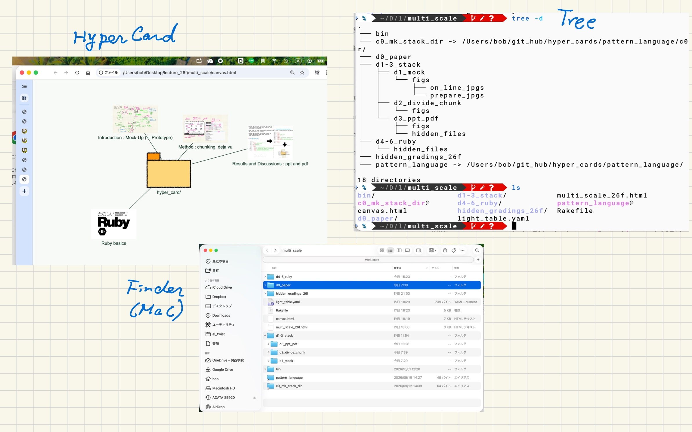
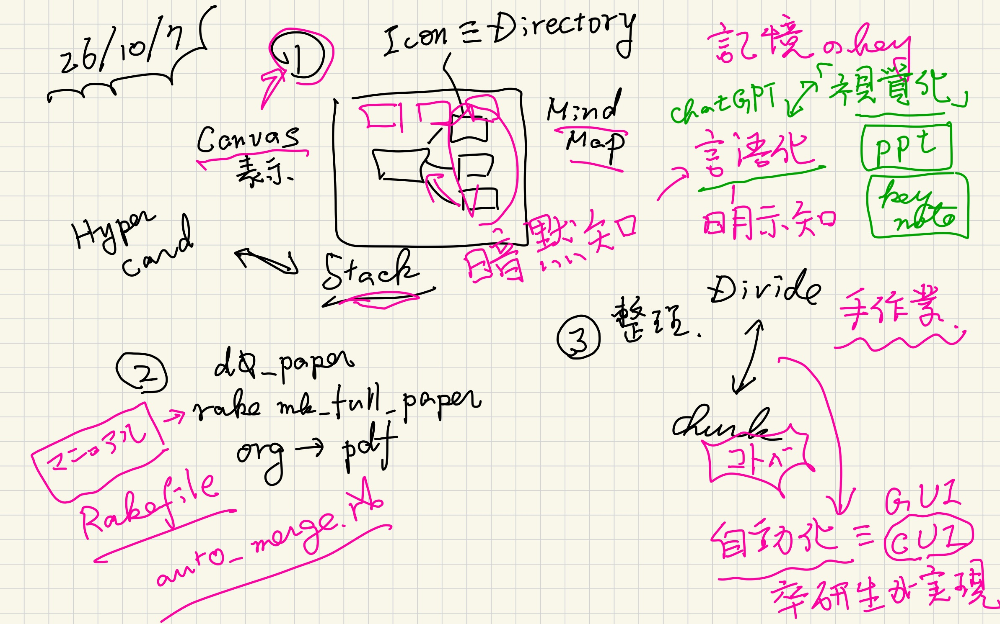
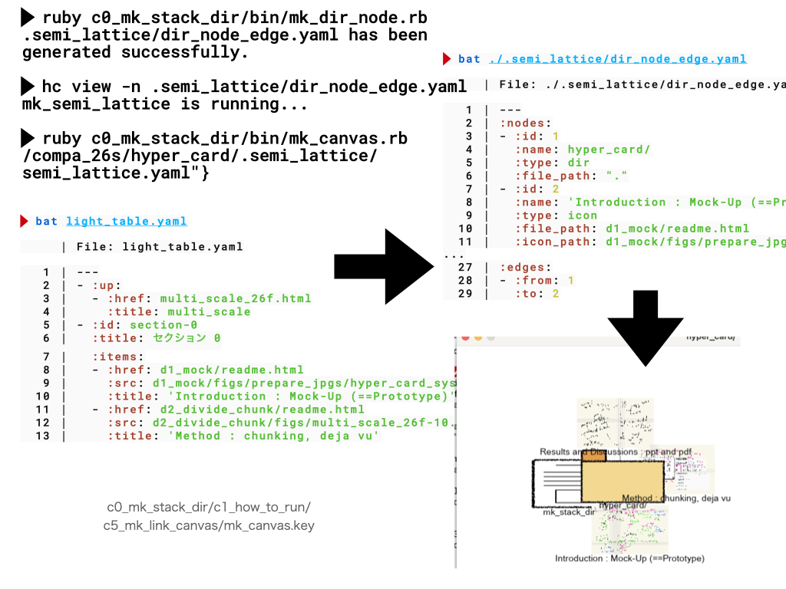
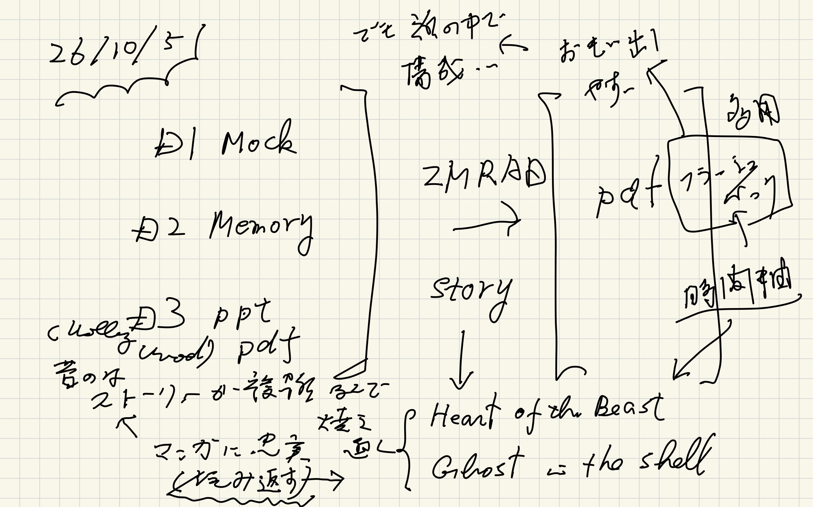
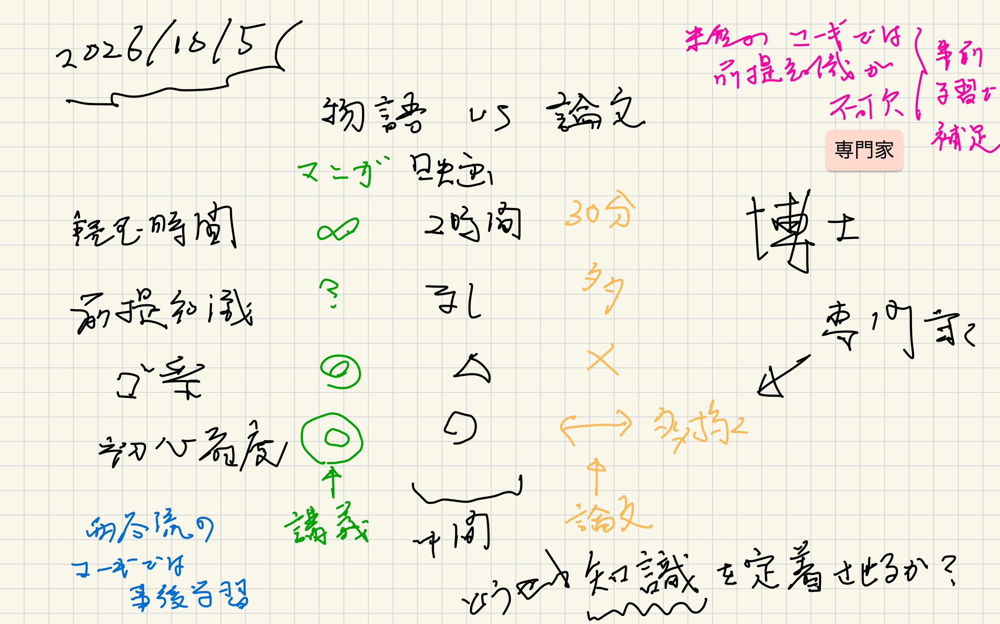
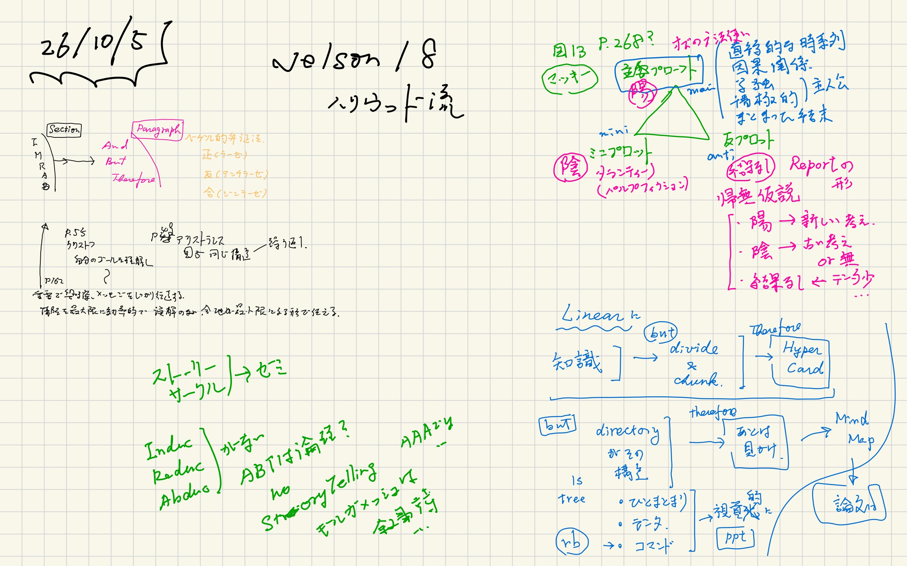
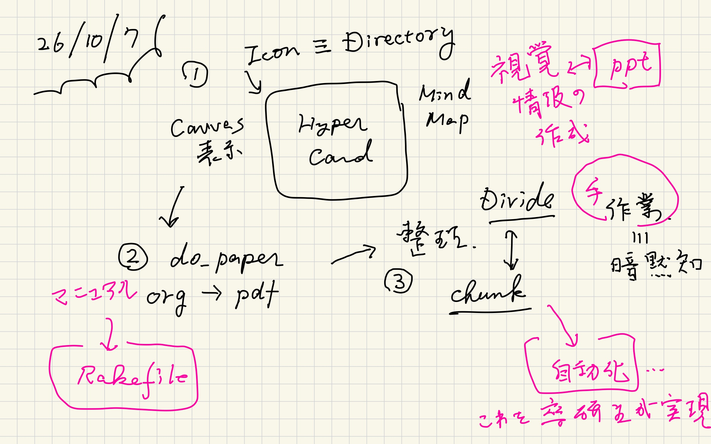
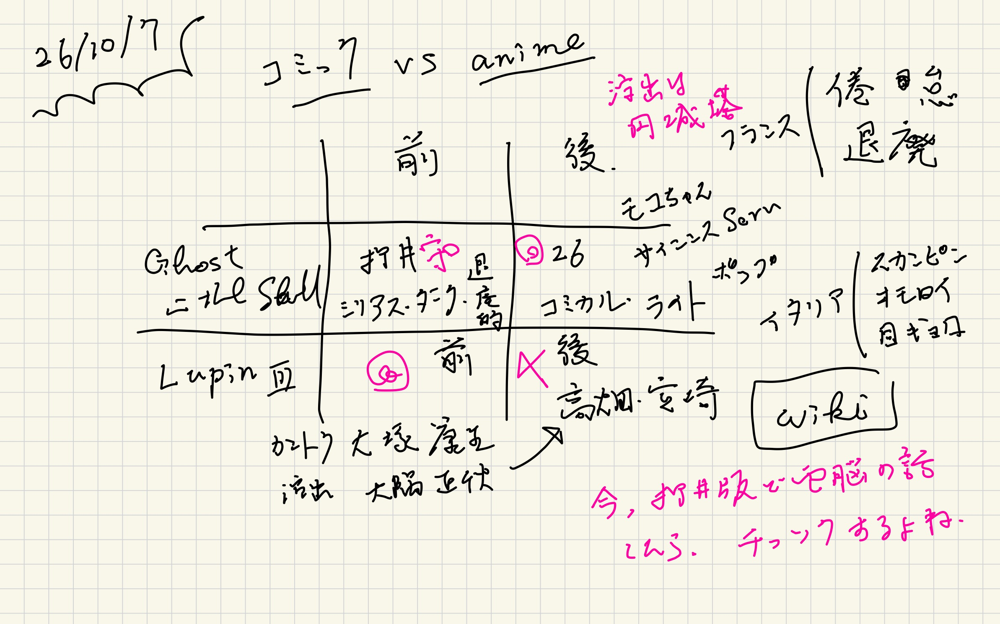
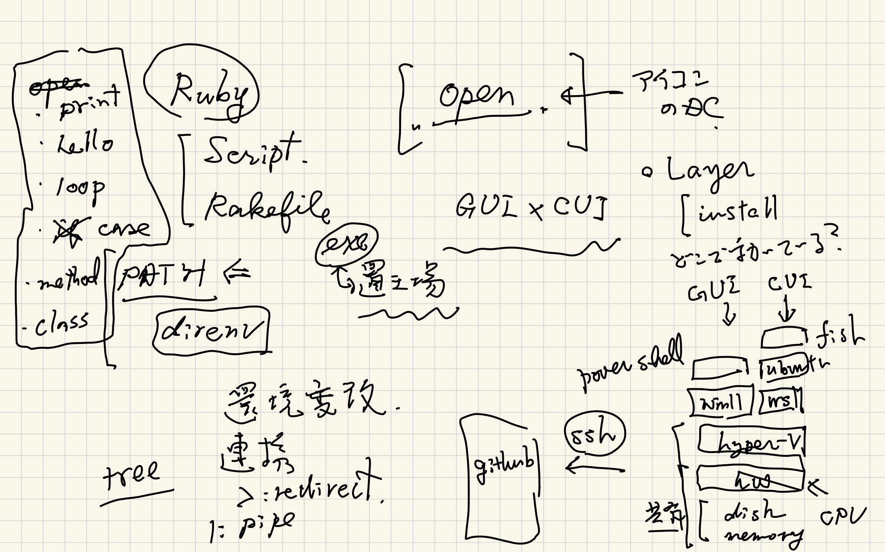
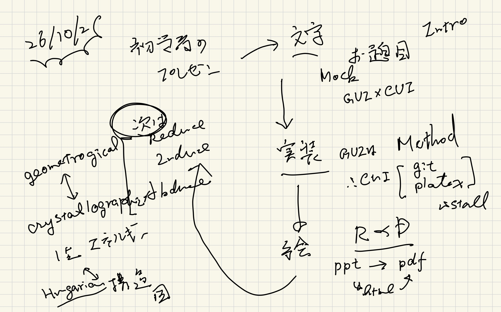

Results and Discussions : ppt and pdf
Table of Contents
prev_button up_button next_button
1. canvasあるいはMindMap的なHyperCard
HyperCardのMockが， 今見ていただいているcanvas.htmlになります．
IconとかNaviとか， ActionがGUIとCUIでどのように実現されているか あるいはMockされているかを観察してください．
 |
 |
- 視覚化，manual, 整理による知識の構造化
- 暗黙知の明示化
- 自動化
2. ppt and Rakefile
まだ，自動化されていません(^^;． 上のcanvas.htmlを作成するには いくつかの操作が必要になります． そんな時，手順をmanualにするんですが それを速攻で作ってくれるのがppt， そしてRakefileです．
 |
3. CUIとplain.txt
なぜCUIがGUIよりプログラマに良いのかは， Pragmatic programmar (v2)にある 次のテキストを参照ください．
4. Why Ruby?
さて，では，これらがどうやって実現されているか？ そしてeverday usersの手によってどのように 構築されるかを示すのが次の目的になります．
以下のテキストにはその必要性が書かれています．
5. Ghost?
以下は「攻殻機動隊とAIの知能」についてのGeminiとのchatです． 後の講義で紹介しようとするSemi Latticeを議論しようとはじめました． そこまで辿り着けなかったのですが， Agentic Engineeringの現状がまとまっているので残しておきます． あとで考える時はここからはじめられるのが， 知識を留めておくコツです． どうせ忘れるから，目に着くとこに置いておくという．
6. 準備メモ(preparation notes)
 |
 |
 |
 |
 |
 |
 |
 |
 |